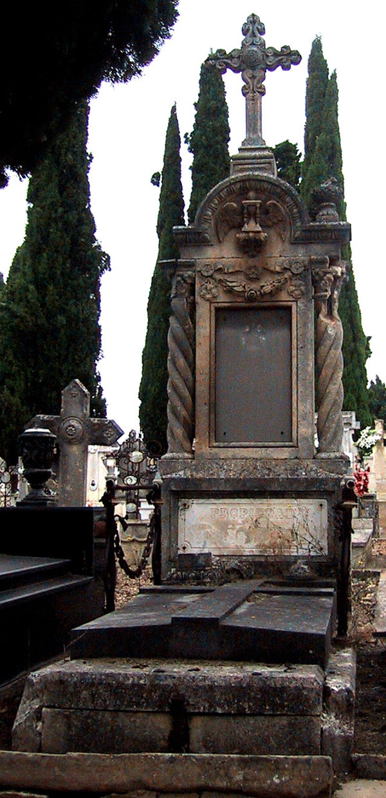
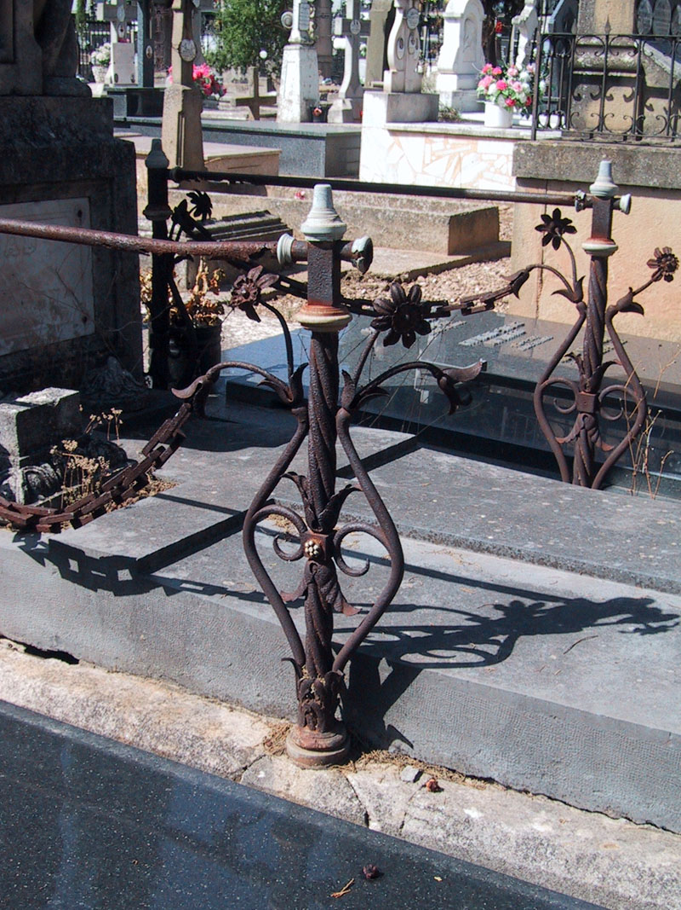
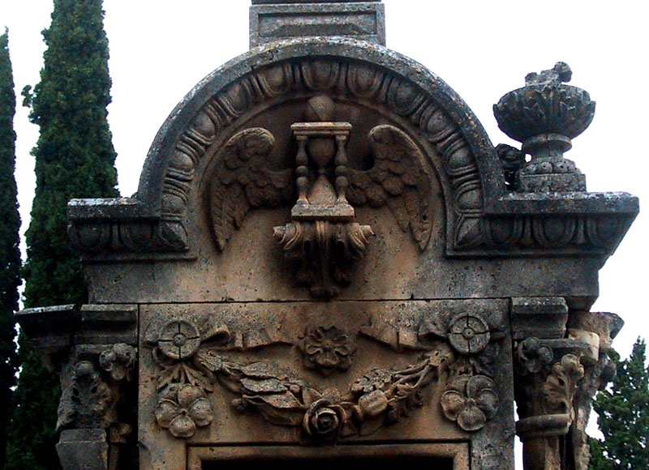
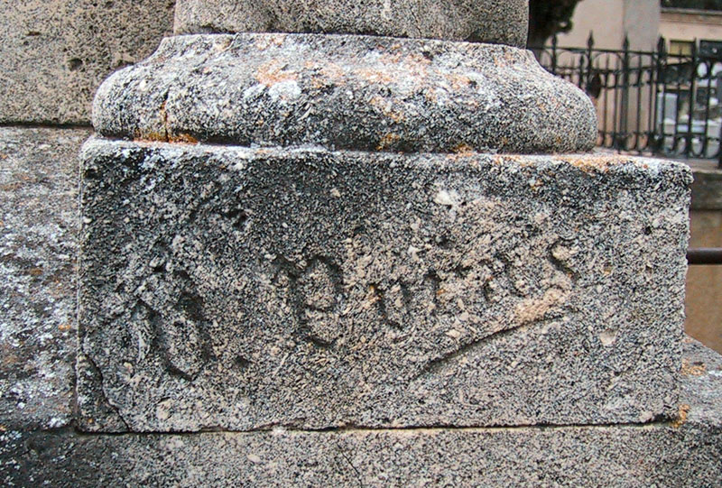

El panteón de Blas Álvarez es, sin duda, la obra más espectacular de Ubaldo Puras en el Cementerio de La Planilla. Don Blas Álvarez Sáenz (Calahorra, 1849-1901) estaba avecindado en la calle Pastelería nº 6 con su esposa, Elena Bermejo Pérez. Fue fabricante de conservas, comerciante y regidor síndico en 1891 y vendió su fábrica de conservas del Mercadal, de grandes dimensiones, en 1900. El 17 de febrero de 1895, solicitó terreno para una sepultura entre los panteones de Gaspar de Miranda y Teodoro Redal. Sin duda se concedió el terreno en otro lugar ya que la sepultura de Gaspar de Miranda se encuentra en otra manzana del cementerio[1].

En la actualidad el panteón se encuentra en mal estado de conservación y se está degradando con gran rapidez, con desprendimientos de fragmentos en los últimos años. Las raíces del árbol situado en las inmediaciones están además levantando la sepultura.
Es una sepultura con una pequeña cama de piedra cubierta con gruesa losa también de piedra, en la que se aprecia una cruz en relieve. La zona de los pies no queda cubierta con la losa sino que presenta su propia cubierta para facilitar el acceso a la cripta inferior, a través de una placa maciza de piedra sujeta con barra y candado de hierro. El perímetro estaba cerrado por los cuatro lados con pilas, cadenas y barras de hierro conservándose sólo los laterales de la parte delantera. Las pilas son torsas, sobre base cilíndrica y con un pequeño nudo cúbico decorado con una roseta blanca que sujeta hojitas de chapa situadas a los lados. De la parte inferior surgen tallos vegetales curvilíneos que se prolongan hasta la zona superior donde se abren dando lugar, cada uno, a una flor y un capullos que, por medio de una cadena, está unido al siguiente. La parte superior de la pila está constituida por una pieza rectangular de remate apuntado, donde encajan las barras cilíndricas de unión entre las pilas.

La cabecera se alza sobre la cama y consta de un pedestal rectangular con la inscripción "PROPIEDAD DE D. BLAS ALVAREZ" grabada en mármol blanco, y un cuerpo rectangular flanqueado por columnas salomónicas que soportan una estructura en arco-dintel con cornisa de ovas. Corona el conjunto una gran cruz latina flordelisada, de brazos sinuosos y con florón vegetal central. A ambos lados del arco se colocaron vasos abalaustrados con decoración vegetal, hoy casi perdidos. Las columnas están colocadas sobre basa poco moldurada y presentan capitel vegetal. Entre las columnas, un cajeado rectangular marca el espacio de la lápida en la que constan los datos de fallecimiento del propietario. La zona superior está decorada con una guirnalda de flores muy naturalista y plástica, compuesta de pensamientos, flor de adormidera, rosa y hojas de laurel. En el tímpano encontramos un bellísimo reloj de arena alado sobre ménsula vegetal, con un pequeño orbe o bola del mundo sobre él.

En la parte trasera de la sepultura se han colocado algunas lápidas de piedra, entre las que destaca la superior, en la zona correspondiente al tímpano, en la que puede leerse la inscripción "SI VELOZ CORRE LA ARENA EL TIEMPO NO CORRE, VUELA", bajo un bajorrelieve de un reloj de arena alado.

La sepultura está firmada "U. Puras", lo que la acredita como obra del escultor u marmolista Ubaldo Puras, nacido en Belorado en 1844 y documentado en Calahorra desde 1893. De esta ciudad pasó a Logroño en 1899 y Haro en 1905, firmando sepulturas en ambas localidades[2].
Sus sepulturas se caracterizan por la gran calidad e la talla y son fácilmente reconocibles ya que acostumbra a utilizar un tipo de piedra muy característica, con pequeñas irregularidades debidas a la presencia de pequeños cristales. También los detalles vegetales definen el quehacer de Puras, generalmente hojas y formas vegetales que se adaptan al espacio y en especial las rosetas situadas en el centro de las cruces, con hojas carnosas aunque levemente rígidas. En Calahorra firma seis panteones en los años 1894-1895 y la escultura de un séptimo, que también se le puede atribuir. La mayor parte están ubicados en la calle de los Mártires, que une la puerta principal del recinto, donde se encuentran algunos de los sepulcros más antiguos de este cementerio.
[1] Archivo Municipal de Calahorra. Libro de Actas Municipales. 1895-1897. Sig. 142/1. S/f. 17 de febrero de 1895. AMC. Cod. 2.1.4.13. Sig. 441/3 (padrón de 1892), fol. 42. Sig. 442/1 (padrón de 1897), fol. 43. Sig. 442/3 (padrón de 1901), s/f; calle Fuero nº 6. LÓPEZ RODRÍGUEZ, P. Calahorra Levítica y Liberal. Cambio socioeconómico y caciquismo liberal en La Rioja Baja 1890-1923. Calahorra: Amigos de la Historia de Calahorra, 1997. P. 146. La Rioja, 17 de enero de 1900.
[2] Archivo Municipal de Calahorra. Padrón de 1897. Cod. 2.1.4.13. Sig. 442/1, fol. 19. Rioja Católica. Año III, nº 21, 21 de mayo 1893 (p. 277). BERNABE PEÑA, P. de.- Guía Chapel-Andri. Provincia de Logroño. 1899. Logroño: Imp. Y lito. De los Hijos de Merino, [s.a]. P. 153. CARIOLET, L.- Guía comercial de Logroño, Haro y Calahorra. Calahorra: Imp. Agustín Palacios, 1905. P. 73.